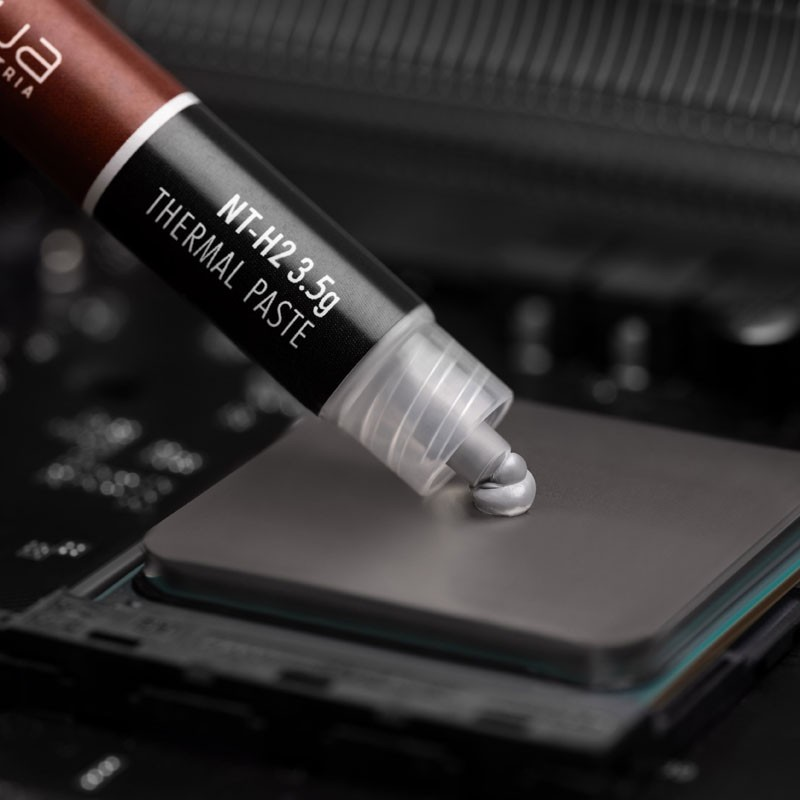
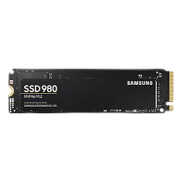

Monter un Ordinateur peut parfois sembler compliqué, bien que ce soit assez facile. De nos jour, un Ordinateur est un puzzle a assembler, effectivement le montage d'un PC n'est pas compliqué, mais il vous faudrat de l'attention et vous devrez etre impérativement minucieux pour ne pas risquer d'endomager les composants.

Nous vous conseillons d'acheter au préalable un tube de pate thermique, en effet la plus part du temps de la pate préapliquée se trouve sur les ventirad mais nous vous la déconsillons car celle-ci et bien souvent de mauvaise qualitée.
Tout d'abord nous allons nous interresser uniquement au processeur, à la pate thermique, la ram, et au ventirad/weatercooling.
Intel :
Prenez votre processeur, ouvrez le socket puis placer le CPU face contenant le texte vers les slots pci, de façon à se que vous puissiez lire le texte quand la carte mère est au format portrait.
Amd :
Prenez votre processeur, ouvrez le socket puis placer le CPU face contenant le texte vers la backplate de votre carte mère, de façon à se que vous puissiez lire le texte quand la carte mère est au format paysage.
Vous devez maintenant placer votre/vos barrete(s) de RAM sur les slots prévus à cet effet, pour cela placer votre/vos barrete(s) de RAM dans les slots (le plus souvent situé en haut à droite de votre carte mère) en respectant bien le sens de celle-ci via les détrompeurs qui sont installés sur les slots.
Remarque : 1) Vous devez entendre un petit (clic) quand la/les barrete(s) est/sont correctement(s) installée(s). 2) Les détrompeurs ne sont pas les memes en fonction de la génération de votre/vos barrete(s).Prenez votre tube de pate thermique (si achetée, voir dans les recommandations), puis apliquer sur la surface du processeur un grain de riz de pate.
Remarque : en mettre assez mais pas trop. Placer-la derière votre carte mère (celle-ci varie en fonction du fabriquant de processeur), pour y visser ensuite le Ventirad/Watercooling. Brancher maintenant le cable des ventilateurs sur la prise "CPU FAN".
Remarque : il existe énormément de système de refroidissements, nous vous conseillons donc vivement de vous référer au manuel de votre système de refroidissement.La première partie est maintenant terminée.
Nous allons avoir besoin de prendre la carte-mère ou comme fais lors du montage précédent nous y avions installé le processeur, la RAM ainsi que le ventitad. Nous aurons également besoin de prendre le boitier, les disques durs, l'alimentation, le lecteur graveur ainsi que la carte graphique.
Prener les entretoises (normalement fournies dans la boîte de votre carte-mère) et vissez-les dans votre boitier en prenant en compte où sont les trous prévus pour visser les vis tenant votre carte-mère a celui-ci....
Sur la plupart des boitiers modernes, a l'arrière du boitier au niveau des câbles de l'alimentation, il y aurat une cage à disques durs. C'est ici que vous devrez visser vos disques/SSD. Maintenant vous devrez brancher les disques durs/SSD avec le câble en provenance de l'alimentation pour lui fournir l'alimentation et le câble sata pour le transfert de données....
prenez votre alimentation, puis vissez celle-ci dans l'emplacement qui lui est prévu... ainsi ceci fait, brancher le câble 24 broches au port 24 pins de votre carte-mère. Brancher le câble noté CPU au port(s) CPU sur votre carte-mère.
Remarque : si vous avez plusieurs ports pour alimenter le CPU et que votre alimentation le supporte, ne vous privez pas, branchez tous les câbles.
A l'avant de votre boitier, vous devez avoir différents câbles a relier à votre carte-mère (bouton power, port USB, port casque....)
Tout d'abord, repérer les câbles du front panel (voir photo 4), puis brancher les câbles spécifiés ;
-Power SW : il sert à relier le bouton power présent sur votre boitier à votre carte-mère.
-Power LED : elle sert à vous indiquer quand le Pc est allumé.
-HDD LED : elle sert à ce que plus elle clignote, plus cela veut dire que votre HDD travaille.
-Reset SW : il sert à faire redémarrer le PC.

La deuxième partie est maintenant terminée.